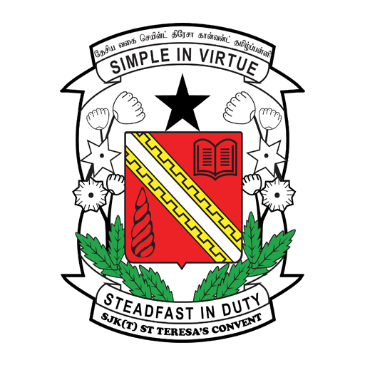

Academic History & Qualifications
A chronological overview of my educational journey and achievements.
University Studies (Current)
Program: Diploma - SI110 (Science Information) |
Campus: Cawangan Johor, Kampus Segamat
| Status |
Current Semester |
Expected Graduation |
Current CGPA |
| Active Full-Time Student |
5 |
2026 |
3.58avg |
Honors & Awards:
-
Dean's List: From Semester 1 to 4, Diploma in Science Information, UiTM
[View Certificate]
Relevant Coursework & Skills:
-
IMD 318: Web Content Management & Design
- Skilled in semantic HTML and external CSS styling (as demonstrated by this portfolio).
- Learned responsive design principles and structure planning.
-
IMD 316: Multimedia for Information Presentation
- Experience designing visual and multimedia materials to communicate information clearly and attractively.
-
ENT 300: Fundementals of Entrepreneurship
- Learned business planning, opportunity analysis and developing a simple business project.
-
IMD 261: Database for Business Information Professionals
- Gained foundation in database design, data organization and basic SQL concepts.
Secondary Education
SMK IJ Convent, Johor Bahru, Johor

Program: SPM (Sijil Pelajaran Malaysia) |
Year Graduated: 2022
-
SPM Result: 4A, 2B, 2C+
[View Results]
- Appointed to be part of the Student Leaders Board (SLB).[What is SLB?]
- Developed strong foundation in dicipline and leadership skills.
Primary Education
SK IJ Convent, Johor Bahru, Johor
Program: UPSR (Ujian Pencapaian Sekolah Rendah) |
Year Graduated: 2017
-
UPSR Result: 2A, 4B.
[View Results]
- Participated in public speaking at Istanbul, Turkey.
- Achieved 100% attendance for 4 years in a row.
Find My Educational Institutions
Click on the images below to see the location on Google Maps!
↑ Back to Top